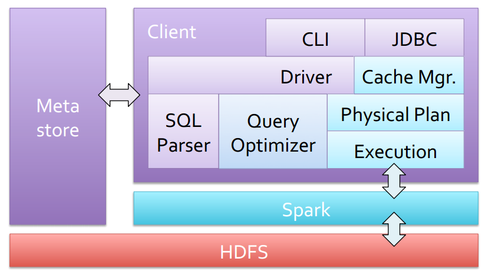

Introduction to Shark
SQL and Rich Analytics at Scale
Reported by Jinyang Zhou / @ailurus1991
What is Spark?
NOT a modified version of Hadoop
Separate, fast, MapReduce-link engine
- In-memory data storage for very fast iterative queries
- General execution graphs and powerful optimizations
- Up to 100x faster than Hadoop MapReduce
Compatible with Hadoop's storage APIs
- Can read/write to any Hadoop-supported system, including HDFS, HBase, SequenceFiles, etc
What is Shark?
- A SQL analytics engine built on top of Spark
- Compatible with Apache Hive data, metastores, and queries(HiveQL, UDFs, etc)
- Similar speedups of up to 100x
Adoption
- In use of Yahoo!, Foursquare, Berkeley, Princetion & many others(possibly Taobao, Netease)
- 600+ member meetup, 800+ watcherson Github
- 30+ contributors

This Talk
- Hadoop & MapReduce
- Spark
- Shark: SQL on Spark
- Why is Hadoop Mapreduce slow?
How do you scale up applications to PBs of data?

I can use hundreds or thousands of machines!
But distributed programming is hard(task scheduling, data synchronization, machines failures)
MapReduce
Programming model: simple abstraction(i.e. map and reduce) inspired by functional programming
Execution engine: runs on thousands of commodity machines.
Hadoop
Hadoop Distributed File System(HDFS)
- A distributed file system modeled after Google File System
Hadoop MapReduce(aka MapRed, MR)
Many other related projects such as Hive(SQL on Hadoop)
Hive
A data warehouse
- initially developed by Facebook
- puts structure onto HDFS data(schema-on-read)
- compiles HiveQL queries into MapReudce jobs
- flexible and extensible: support UDFs, scripts, custom serializers, storage formats
Popular
- 90+% of Facebook Hadoop jobs generated by Hive
OLTP(serving) vs OLAP (analytics)
Dterminism & Idempotence
Map and reduce functions are:
- deterministic
- side-effect free
Tasks are thus idempotent:
- Rerunning them gets you the same result
Dterminism & Idempotence
Fault-tolerance:
- Rerun tasks originally schedualed on failed nodes
Straggers:
- Rerun tasks originally schedualed on slow nodes
This Talk
- Hadoop & MapReduce
- Spark
- Shark: SQL on Spark
- Why is Hadoop Mapreduce slow?
Why go Beyond MapReduce?
MapReduce simplified big data analysis by giving a reliable programming model for large clusters
But as soon as it got popular, users wanted:
- More complex, multi-stage applications
- More interactive, ad-hoc queries
Complex jobs and interactive queries both need one thing that MapReduce lacks:
Efficient primitives for data sharing
In MapReduce, the only way to share data across jobs is stable storage(e.g. HDFS)
SLOW!
Solution
Resilient Distributed Datasets(RDDs)
- Distributed collections of objects that can be stored in memory for fast reuse
- Automatically recover lost data on failure
- Support a wide range of applications
Programming Model
Resilient distributed datasets(RDDs)
- Immutable, partitioned collections of objects
- Can be cached in memory for effcient reuse
Transformations(e.g. map, filter, groupBy, join)
- Build RDDs from other RDDs
Actions(e.g. count, collect, save)
- Return a result or write it to storage
Fault Tolerance
RDDs track the series of transformations used to build them (their lineage) to recompute lost data
Fault Recovery Results
Tradeoff Space

Behavior with Not Enough RAM

Logistic Regression Performance

Implementation
Use Mesos/YARN to share resources with Hadoop & other frameworks
Can access any Hadoop input source (HDFS, S3, …)
20k lines of code

User Applications
- In-memory analytics & anomaly detection (Conviva)
- Interactive queries on data streams (Quantifind)
- Exploratory log analysis (Foursquare)
- Traffic estimation w/ GPS data (Mobile Millennium)
- Twitter spam classification (Monarch)
Conviva GeoReport

Group aggregations on many keys w/ same filter
40× gain over Hive from avoiding repeated reading, deserialization and filtering
This Talk
- Hadoop & MapReduce
- Spark
- Shark: SQL on Spark
- Why is Hadoop Mapreduce slow?
Challenges
- Data volumes expanding
- Faults and stragglers complicate parallel database design
- Low-latency, interactivity
MPP Databases
- Vertica, SAP HANA, Teradata, Google Dremel...
- Fast!
- Generally not fault-tolerant; challenging for long running queries as clusters scale up.
- Lack rich analytics such as ML and Graph algorithms.
MapReduce
- Apache Hive, Google Tenzing, Turn Cheetah...
- Deterministic, idempotent tasks: enables fine-grained fault-tolerance and resouce sharing.
- Expressive ML algorithms.
- High-latency, dismissed for interactive workloads.
Shark
A data warehouse that
- builds on Spark,
- scals out and is fault-tolerance,
- supports low-latency, interactive queries through in-memory computation,
- supports both SQL and complex analytics,
- is compatible with Apache Hive(storage, serdes, UDFs, types, metadata).
Hive Architecture
Shark Architecture
Engine Features
- Columnar Memory Store
- ML Integration
- Partial DAG Execution
- Data Co-partitioning
- Partition Pruning based on Range Statistics
Efficient In-Memory Storage
Simply caching Hive records as Java objects is inefficient due to high per-object overhead
Instead, Shark employs column-oriented storage using arrays of primitive types.

Benefit: similarly compact size to serialized data, but>5x faster to access
ML Integration
- Unified system for query processing and machine learning
- Query processing and ML share the same set of workers and caches
Performance

This Talk
- Hadoop & MapReduce
- Spark
- Shark: SQL on Spark
- Why is Hadoop Mapreduce slow?
Why are previous MR-based systems slow?
- Disk-based intermediate outputs.
- Inferior data format and layout(no control of data co-partitioning).
- Execution strategies (lack of optimization based on data statistics).
- Task scheduling and launch overhead!
Task Launch Overhead
Hadoop uses heartbeat to communicate scheduling decisions.
Task launch delay 5-10 seconds.
Spark uses an event-driven architecture and can launch tasks in 5ms
- better parallelism
- easier straggler mitigration
- multi-tenancy resouce sharing